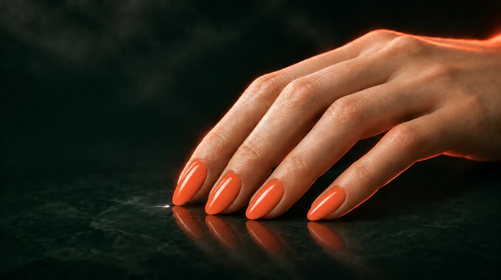

01 · acryl
lengte en karakter.
Acryl is gemaakt van een poeder en een vloeistof die samen een stevige, vormbare laag vormen. Daarmee worden nagels verlengd of versterkt en krijgen ze precies de vorm die jij wilt — van subtiel tot uitgesproken.
- Voor wie
- Voor wie houdt van lengte, van een opvallende set, of voor wie de eigen nagels te kort of te zwak vindt om mee te werken.
- Hoe het gaat
- De natuurlijke nagel wordt voorbereid, daarna wordt de acryl laag voor laag opgebouwd, in vorm gevijld en afgewerkt met kleur of glans.
- Onderhoud
- Omdat je eigen nagel doorgroeit, wordt een acrylset na verloop van tijd bijgewerkt. Vraag tijdens je afspraak wat voor jou een goed moment is.

Voorbeeldbeeld